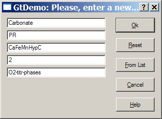
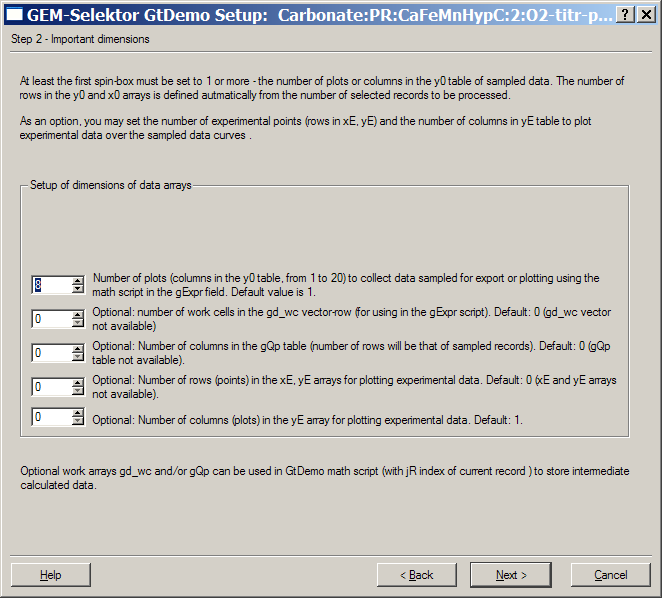
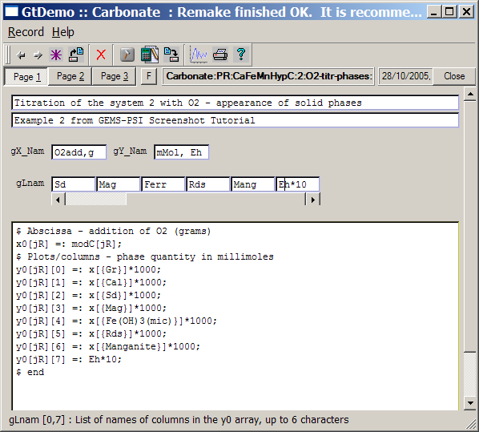
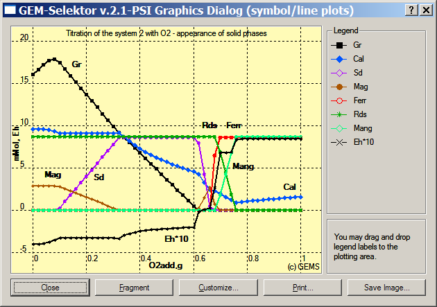
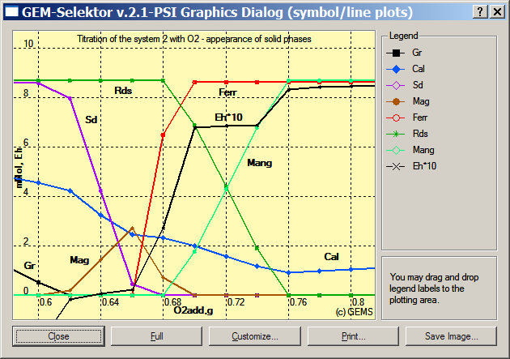

GEM-Selektor version 2-PSI
GEM-Selektor version 2-PSI
SCREENSHOT GALLERY
TUTORIAL
Previous Page
Back to
Start Page
(27) How
to "clone"
and modify the GtDemo sampler.
Our task now
is to modify the GtDemo sampler in order to show presence of relevant
solid phases.
In GtDemo window, switch to Page 1 and execute the "Record" "New
(clone)..." menu command. Confirm saving the current record to database
if the program will ask about that. You will see the "GtDemo: Please,
enter a new record key" dialog again. Click there on the "From list..."
button and then "Ok" to get the key of previously created GtDemo
record, and modify the last field as shown below.

Press "Ok" when ready. In the appearing wizard, choose "Process" and
click "Next >" to
go for the second page. There, you will
have to modify the the number of plots, as shown
below:

Why do we need 8 plots? This is to follow Calcite, Graphite, Siderite,
Magnetite,
Ferrihydrite, Rhodochrosite and Manganite solids plus Eh of aqueous
solution. Press "Next >" when ready, then "Finish" to leave the
wizard, and then "Ok" in the appearing
"...mark/select...'' dialog because all SysEq records are already
selected.
You are now back to Page 1 of GtDemo window. First, modify the comment
line. The math script must
be modified together with the plot names (in gLnam fields; only six
names are displayed, so take care about scrolling the fields to a
correct position when entering the plot name). We can just plot mole
quantities of
the phases mentioned above that are the same as mole quantities of the
respective Dependent Components DC (the "primal solution" vector x
). You can check the exact spelling of DC names if you open the "Single
Thermodynamic System" dialog, switch to the "Results" page, and expand
each of the phases.
After editing the math script, the Page 1 of GtDemo window should
appear as
shown below (note that the gLnam field is scrolled to
the rightmost position on this screen image):

Multiplication by 1000 converts mole into millimole quantities.
Now, save the record to database, run the data sampler, and plot the
results (check the previous tutorial file, if in doubts how to do it).
Customize the
graph to see something like the one below:

On the above plot, it's clearly seen that the jumps on the Eh*10 curve
coinside with disappearance of certain redox-controlling solid phases.
However, the picture is complicated and difficult to discern at O2
additions between 0.6 and 0.8. You can customize the "Fragment"
intervals and plot the fragment (by clicking on the "Fragment" button):

Here we can see that Magnetite appears where Graphite disappears,
Siderite disappears where Ferrihydrite appears, and Manganite appears
where Magnetite disappears. In all such points, Eh changes rapidly,
indicating redox transitions.
There is an interval where Rhodochrosite co-exists with Manganite; when
Rhodochrosite disappears, the system gets almost completely oxidized,
and
Eh does not change anymore.
Calcite is present throughout, but at varying quantity due to strong
changes in pH and f CO2 along the redox profile.
Now, you can put together all the obtained graphs and follow how metal
solubilities, gas fugacities, and phase assemblages are inter-related
in the modelled redox profile.
The easiness of
"cloning"
and modifying Process simulators and GtDemo samplers in GEM-Selektor is
now
at your fingertips. For instance, you can "clone" the Process
record
and set it at a smaller step size (e.g. 0.005 g) in the interval 0.6 to
0.8
of O2 additions. After that, you can "clone" the last GtDemo
record
to obtain the above picture but at much higher resolution in the
most
interesting redox transition region.
Next Page
Back
to main GEMS-PSI page
©
2003-2005 GEMS-PSI Development and
Support Team.